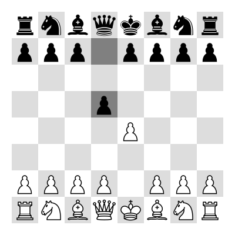
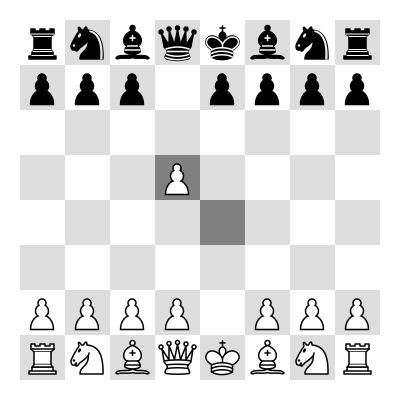

Capturing Pieces¶
Chess pieces can move across the board according to very specific rules, and by doing so they can capture enemy pieces. In the example below Black has just moved the black pawn donward two squares. The white pawn can now move diagonally and capture it, removing the opponent piece from the chessboard.

Is White Turn
Question: How will the chessboard look after the white pawn captures the black pawn?

Is Black Turn